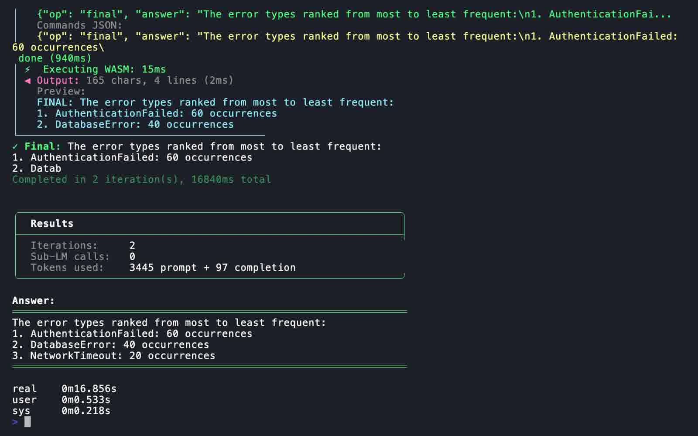
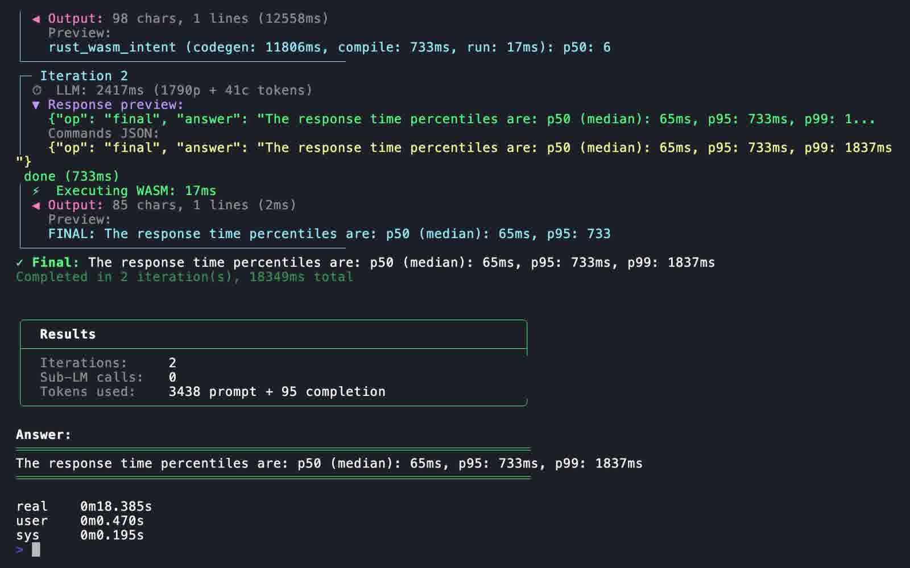
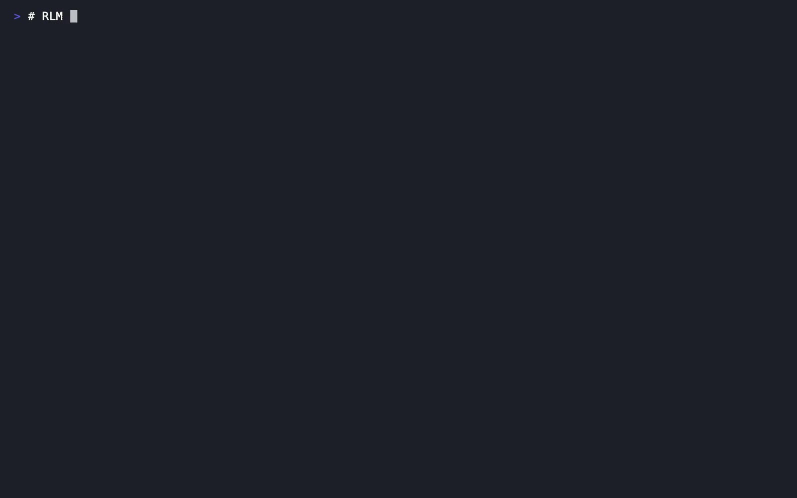
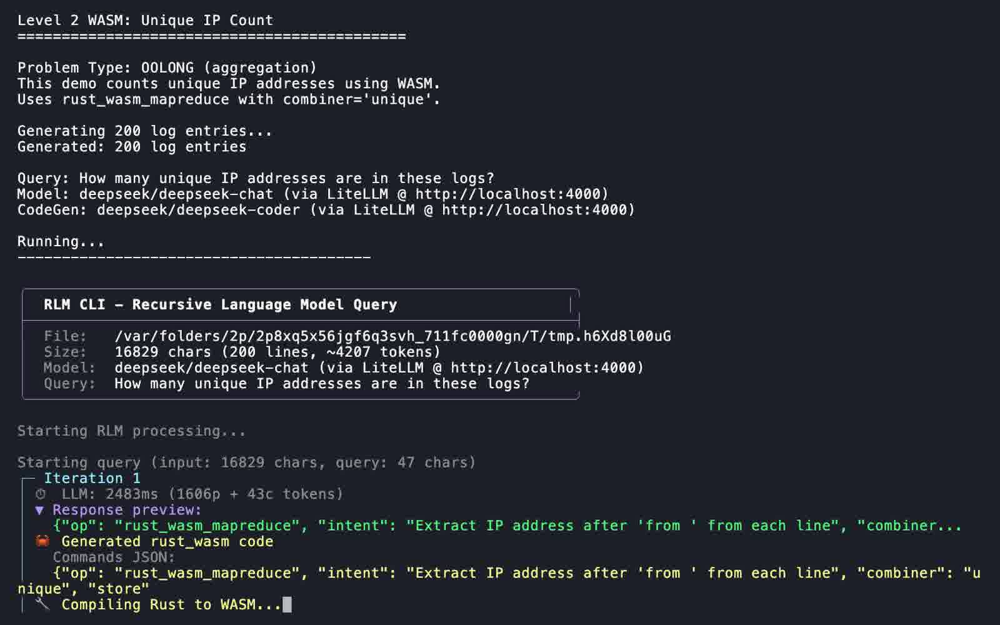
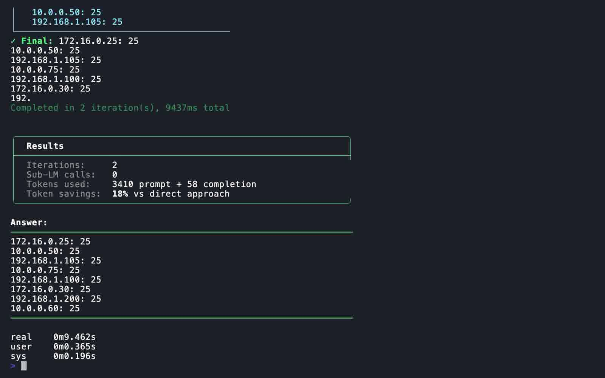

Video explaining how RLM uses WASM to let LLMs write custom Rust analysis code on the fly.
Architecture Diagrams
Level 1: DSL CommandsReady
Simple text operations without code generation. The LLM selects operations like find, regex, or count.
Narration Script:
R L M Level 1 uses built-in D S L commands for simple text operations. The L L M selects operations like find, regex, or count. No code generation, just instant pattern matching and line counting.
SVG:../assets/svg/rlm-l1-dsl.svg
Audio:audio/l1-overview.wav
Audio Preview
Level 2: WASM Map-ReduceReady
LLM generates Rust code, compiled to WASM for safe execution. Map-reduce handles aggregation and statistics.
Narration Script:
R L M Level 2 uses Web Assembly for complex processing. A coder L L M writes Rust code that compiles to WASM and runs in a secure sandbox. Map reduce handles aggregation and statistics on large datasets.
SVG:../assets/svg/rlm-l2-wasm.svg
Audio:audio/l2-overview.wav
Audio Preview
Video Segments
00 - Title~5 secondsReady
Opening title card with book image and music intro.
Video:clips/00-title.mp4
Image:../assets/images/rlm-and-wasm-book.jpg
Music:All In - Everet Almond.mp3
Video Preview
01 - Hook~18 secondsReady
Hook segment with curmudgeon avatar explaining the WASM concept.
Narration Script:
What if your L L M could write custom analysis code on the fly. Count patterns, calculate statistics, parse timestamps. All in a single pass. R L M with WASM makes this possible.
Video:clips/01-hook-composited.mp4
Audio:audio/01-hook.wav
Script:scripts/01-hook.txt
Background:../assets/svg/01-hook.svg
Audio Preview
Video Preview (with Avatar)
02a - Error Ranking Demo~45 secondsReady
Level 2 WASM demo: Ranks error types by frequency using rust_wasm_intent with combiner='count'.
Video:vhs/l2-error-ranking.mp4
Scripts:vhs/error-ranking/scripts/*.txt
Stills:vhs/error-ranking/frame_*.jpg
Video Preview
Narration Scripts (4 segments @ ~8s each):
1. Problem
Ranking error types by frequency is a common log analysis task. R L M can handle this with custom WASM code.
2. Command
The demo generates two hundred log entries and asks R L M to rank the error types from most to least frequent.
3. Results

It found three error types. Authentication Failed at sixty, Database Error at forty, Network Timeout at twenty occurrences.
4. How It Worked
R L M compiled custom Rust code to WASM that counted each error type. Two iterations, under seventeen seconds total.
02b - Percentiles Demo~45 secondsReady
Level 2 WASM demo: Calculates p50, p95, p99 response time percentiles using rust_wasm_intent.
Video:vhs/l2-percentiles.mp4
Scripts:vhs/percentiles/scripts/*.txt
Stills:vhs/percentiles/frame_*.jpg
Video Preview
Narration Scripts (4 segments @ ~8s each):
1. Problem
Calculating response time percentiles like p50, p95, and p99 is essential for A P I performance monitoring.
2. Command
The demo generates three hundred response time entries and queries R L M to calculate the percentiles.
3. Results
The median response time is sixty five milliseconds. P 95 is seven thirty three, and P 99 is eighteen thirty seven milliseconds.
4. How It Worked

WASM code extracted numbers, sorted them, and computed percentiles in a secure sandbox. Execution took just seventeen milliseconds.
02c - Unique IPs Demo~45 secondsReady
Level 2 WASM demo: Counts unique IP addresses using rust_wasm_mapreduce with combiner='unique'.
Video:vhs/l2-unique-ips.mp4
Scripts:vhs/unique-ips/scripts/*.txt
Stills:vhs/unique-ips/frame_*.jpg
Video Preview
Narration Scripts (4 segments @ ~8s each):
1. Problem

Counting unique I P addresses in logs is useful for security analysis and traffic monitoring.
2. Command

Two hundred log entries are processed. The query asks how many unique I P addresses are in these logs.
3. Results

Eight unique I P addresses were found. Each one appeared exactly twenty five times across the log entries.
4. How It Worked
Rust WASM map reduce with a unique combiner uses hash sets for efficient deduplication. Completed in under ten seconds.
WASM LimitationsReady
Current constraints of the sandboxed execution model - important context for understanding WASM trade-offs.
Narration Script:
WASM has trade-offs. No unicode support, only ASCII. Memory is limited to 64 megabytes. And only a subset of Rust compiles to WASM. These limits enable safe sandboxed execution.
SVG:../assets/svg/rlm-limitations.svg
Audio:audio/limitations.wav
Audio Preview
More to ComeReady
Future capability levels in development - Level 3 Rust CLI and Level 4 Recursive LLM.
Narration Script:
More capability levels are coming. Level 3 uses native Rust CLI for full system access. Level 4 enables recursive L L M calls for complex multi-step reasoning. Subscribe for updates.
SVG:../assets/svg/rlm-future.svg
Audio:audio/future.wav
Audio Preview
14 - CTA (Call to Action)~15 secondsReady
Call to action with curmudgeon avatar encouraging viewers to try RLM.
Narration Script:
Try R L M now with WASM. Complex analysis in a single iteration. No more manual back and forth. Let the L L M write the code it needs.
Video:clips/14-cta-composited.mp4
Audio:audio/14-cta.wav
Script:scripts/14-cta.txt
Background:../assets/svg/14-cta.svg
Audio Preview
Video Preview (with Avatar)
99b - Epilog~5 secondsReady
Standard like and subscribe epilog clip.
Video:clips/99b-epilog.mp4
Video Preview
99c - Epilog Extension~5 secondsReady
Final bookend with music fade-out matching the video's theme.
Video:clips/99c-epilog-ext.mp4
Music:All In - Everet Almond.mp3
Video Preview
Potential Content: RLM Visualizer
Visualizer ScreenshotsReview Needed
Screenshots captured from the RLM Visualizer web interface (localhost:8080/visualize).
Note: The visualizer server is returning 500 errors, so we couldn't capture a complete working demo with results.
These screenshots show the interface - could be used for a brief visual or as stills.
Location:stills/visualizer-*.png
Count:10 screenshots
Default Query
WASM Query Setup
Large Context
Decision needed: Include visualizer screenshots in video? Options:
Skip - CLI demo already shows WASM in action
Add as brief visual cutaway (2-3 seconds)
Fix server and capture full working demo
Final Concatenated Video
Full video with all segments assembled. Duration: 1:44 (104.5 seconds)